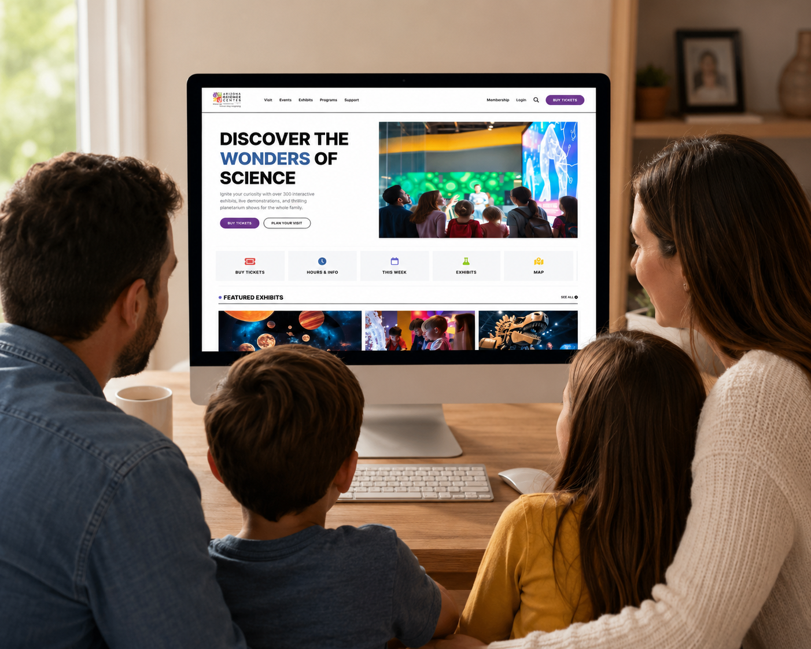
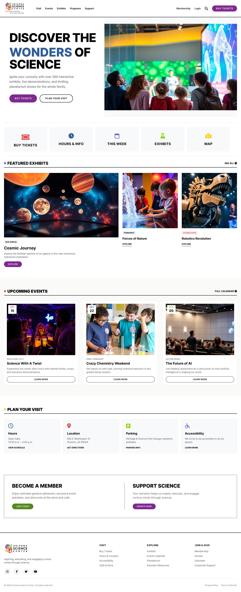
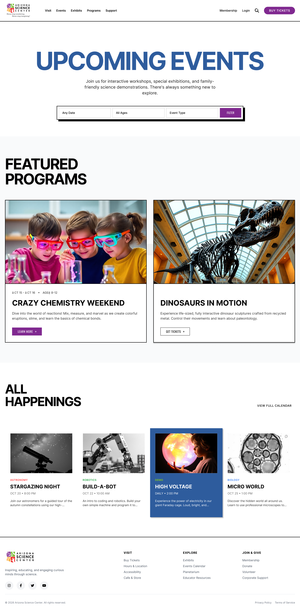
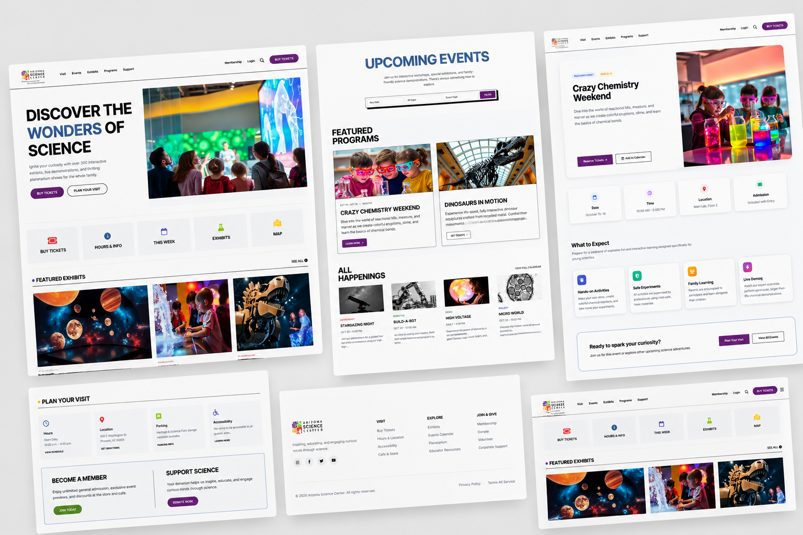

People couldn't figure out how to buy a ticket, find an event, or plan a basic visit. The navigation was broken, the labels didn't make sense, and the ticket flow just didn't go anywhere.
SIGnature
We audited and redesigned azscience.org, the site families, students, and tourists use to plan visits to the Arizona Science Center.

We rebuilt the three pages people struggled with most: home, tickets, and events. To get there, we ran a heuristic evaluation, an accessibility audit, surveys, and usability tests.
Planning a visit shouldn't feel this hard
azscience.org is how most people plan their visit to the Arizona Science Center. The three of us ran a full UX audit and rebuilt the pages where people kept getting stuck, so the site would finally be clear enough to just scan and go.
27
Survey participants
9
Usability sessions
3
Pages redesigned
3
Researchers
Where the site breaks down
The three of us each went through the site independently using Nielsen's heuristics, and we flagged the exact same critical issues at the exact same severity levels. That's when we knew the problems weren't just our opinion.
"Buy Tickets" leads nowhere
The nav item takes users to a page with no purchasing functionality. Exhibition selections redirect without explanation.
No guidance after redirects
During ticket purchasing, users are never told what's happening, so they get lost mid-flow.
Dual navigation systems
Two competing nav bars behave differently on every page, breaking consistency and predictability.
Events are buried
Event content is hard to discover and scan, even though users ranked events as a top priority.
What users told us
Between the survey and nine moderated usability sessions, we kept hearing the same story: people were curious to explore, but friction wore them down, and nobody walked away feeling confident.
"I couldn't figure out how to actually buy a ticket. I kept getting sent to pages that didn't let me purchase anything."
Survey participant · Ticket flow
"I wanted to see what events were happening, but I couldn't find them without digging through the whole site."
Survey participant · Event discovery
Every participant hit friction trying to buy a ticket, and not one of them felt confident afterward.
Research synthesis · 27 survey + 9 usability tests
One profile at a time isn't enough
We ran WAVE and some WCAG-informed manual checks and found the site actually has an accessibility menu, but it only lets you pick one profile at a time. In reality, people's needs overlap, so forcing one choice ends up locking out the exact people the feature was built for.
Three journeys, one broken site
The patterns that kept showing up in our survey responses shaped three personas. Each one wanted something different from the site, but they all ran into the same walls.
Completion hid the friction
All nine people finished their tasks, but almost every session hit the same walls: scrolling to the footer looking for basic info, clicking sidebar items that didn't do anything, or getting sent through a ticket flow with zero explanation.
When we asked people afterward how confident they felt, they admitted a lot more uncertainty than their think-aloud comments let on. Just finishing a task didn't mean the experience actually worked.
Three pages, rebuilt from research
Every change we made came straight out of what we found in testing. We wanted a clearer hierarchy, fewer dead ends, and a next step that was always obvious.

Homepage
One stable navigation system, direct ticket access, and scannable content hierarchy, without the dual nav or ambiguous labels.

Tickets
Four clear steps (date, admission, optional experiences, review) with a persistent cart and explained prerequisites.

Events
Featured event cards, top-level filters, and consistent row structures with visible calls to action.
Explore the redesign
Full Figma prototypes for all three pages, plus a clickable walkthrough you can try below.

Open interactive prototype →Full recommendations deck
Wireframes, finished screens, and a full usability recommendations report. Browse it below or grab the PDF.
Page 1 / 1
What this project taught me
Designing from research means trusting what people actually did over what they said afterward. The real finding wasn't in the survey answers, it was in the gap between people finishing a task and still feeling unsure about it. We wouldn't have caught that if we'd only looked at completion rates.
If I kept going, I'd test the redesigned flows with visitors beyond the ASU student group we had access to this round.